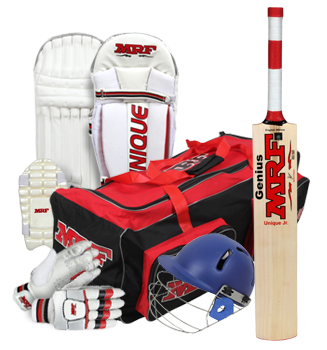

Equipment Needed
Bat: Choose a bat suited to your size and playing style.
Ball: Cricket balls vary for different formats; beginners can start with a tennis ball for safety.
Protective Gear: Helmet, pads, gloves, and abdomen guard are essential.
Clothing: Comfortable cricket attire, usually a white kit for traditional formats.

Beginner Tips
Focus on the basics: Learn proper batting, bowling, and fielding techniques.
Practice regularly: Develop your skills through consistent practice sessions.
Watch and learn: Study professional matches to understand strategies and gameplay.
Join a team: Participate in local clubs or teams to gain experience and play matches.